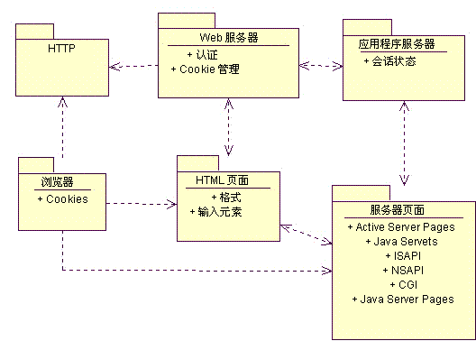
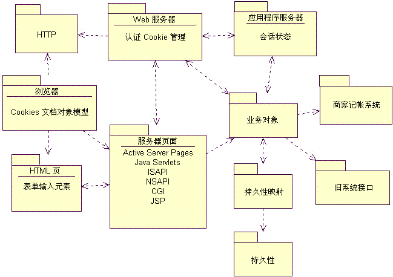
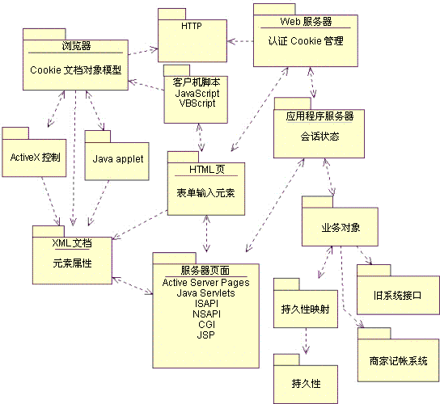
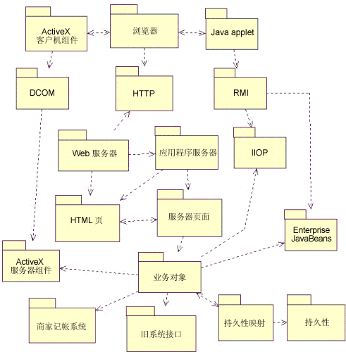

| 概念：Web 体系结构模式 |
 |
|
| 相关元素 |
|---|
简介三种最常见的模式是： 瘦 Web 客户机 － 主要用于基于 Internet 的应用程序，这种情况下对客户机的配置没什么控制。客户机仅需要标准 Web 浏览器（合适的形式）。将在服务器上执行所有的业务逻辑。 胖 Web 客户机 － 在客户机上执行大量体系结构方面的业务逻辑。通常客户机将利用 Dynamic HTML、Java Applet 或 ActiveX 控件来执行业务逻辑。与服务器的通信仍通过 HTTP 来进行。 Web 交付 － 除将 HTTP 协议用于客户机和服务器通信外，还可使用其他协议（诸如 IIOP 和 DCOM）来支持分发式对象系统。Web 浏览器主要充当分发式对象系统中的交付和容器设备。 该列表并不完整，尤其是在一个似乎每年都可能发生技术革命的行业。它较高程度地代表了 Web 应用程序的最常见体系结构模式。和任何模式一样，可将几种模式应用于单个体系结构。 瘦 Web 客户机“瘦 Web 客户机”体系结构模式用于基于 Internet 的应用程序，对于这些应用程序，仅可保证最小的客户机配置。在客户机浏览器的页面请求实现过程中，将在服务器上执行所有的业务逻辑。 适用性该模式最适用于基于 Internet 的 Web 应用程序，或是客户机具有最低计算能力或无法控制其配置的那些环境。 已知用途由于该模式不具备良好的商务意识，不会仅因为客户的客户机能力不足就删除该客户区，所以大多数电子商务 Internet 应用程序都使用该模式。典型的电子商务应用程序尝试达到可能的最大客户池；毕竟，Commodore Amiga 用户的钞票和 Windows NT 用户的完全一样。 结构“瘦 Web 客户机”体系结构模式的主要组件存在于服务器上。该体系结构在很大程度上代表了最小的 Web 应用程序体系结构。主要组件如下： 客户机浏览器 －合适形式的任何标准 HTML 浏览器。浏览器充当普通的用户界面设备。当用于“瘦 Web 客户机”体系结构时，它仅可提供的其他服务是能够接受和返回 cookie。应用程序用户使用浏览器来请求 Web 页面：HTML 或服务器。返回的页面包含完全格式化的用户界面 － 文本和输入控件，这是由浏览器在客户机显示器上呈现的。所有用户均通过浏览器与系统进行交互。 下图显示了“瘦 Web 客户机”体系结构的逻辑视图。  最小的瘦 Web 客户机体系结构 最小的“瘦 Web 客户机”体系结构省略了 Web 应用程序中常见的某些公共可选组件；其中最突出的是数据库。大多数 Web 应用程序均使用数据库来保持业务数据持久。在某些情况下，数据库还可能用于存储页面本身（但是，数据库的该用途代表一种不同的体系结构模式）。由于 Web 应用程序可使用多种技术来保持业务数据持久，所以使用更普通的术语“持久性”来标注体系结构组件。持久性组件还包括可能使用的事务处理监视器（TPM）。 连接数据库与系统的最简单方法是允许服务器页面中的脚本直接访问持久性组件。甚至这种直接访问也利用标准数据访问库（象 RDO、ADO、ODBC、JDBC、DBLib 等）来“做苦活”。在这种情况下，服务器页面是了解数据库模式的。对关系数据库系统而言，它们将构造并执行必要的 SQL 语句，以访问数据库中的数据。在较小的和不太复杂的 Web 应用程序中，这可能已足够了。然而，对较大的和更稳固的系统，首选方法是使用完整的业务对象层。 业务对象组件封装业务逻辑。通常在应用程序服务器中编译并执行该组件。拥有业务对象体系结构组件的一个好处是，其他 Web 或客户机服务器系统可使用相同的组件来调用相同的业务逻辑。例如，某个基于 Internet 的商店前台可在所有客户活动中使用服务器页面和“瘦 Web 客户机”体系结构模式，但是，记帐部门可能需要更完善地访问数据和业务逻辑，并更愿意使用客户机服务器系统（而不是基于 Web 的系统）。记帐部门系统可利用与 Web 前台相同的应用程序服务器上的相同业务组件，但仍使用它们自己的、更为完善的客户机软件。 由于关系数据库是主流业务中最常见的一类数据库，所以应用程序服务器和数据库之间通常存在附加的体系结构组件。它提供对象和关系数据库之间的映射服务。可用多种方法来实施该映射层本身。对该组件的详细讨论不属于本文的范围。 通常添加到该体系结构模式的其他选项有旧系统的集成和商家帐户系统（对电子商务应用程序而言）。可通过业务对象（或用于那些不含正式业务对象组件的系统的应用程序服务器）访问这两种系统。旧系统可能代表记帐系统或制造进度安排系统。商家帐户系统使 Internet Web 应用程序能接受并处理信用卡付款。有许多商家帐户系统可供那些期待进入在线市场的小型企业使用。对较大的企业而言，该组件最可能成为可处理信用卡申请的现有系统的接口。 有了这些可选组件，“瘦 Web 客户机”体系结构模式的逻辑视图就更加完善了。下图显示了逻辑视图。  瘦 Web 客户机逻辑视图 在非基于 Web 的应用程序中，也可找到 Web 应用程序的大多数服务器组件。Web 应用程序的后端设计和体系结构与任何大型机或客户机／服务器系统的设计不同。出于和其他系统相同的理由，Web 应用程序也运用数据库和事务处理监视器（TPM）。Enterprise Java Beans（EJB）和 Microsoft's Transaction Server（MTS）是设想引入 Web 应用程序中的新工具和技术，但在其他应用程序体系结构中同样适用。 Web 应用程序服务器端组件的体系结构和设计与任何客户机服务器系统的体系结构和设计完全相同。由于该体系结构模式着重于 Web 以及特定于 Web 应用程序的组件，所以对可能的后端服务器体系结构进行详细复审超出了该模式的范围。 动态该体系结构模式的底层动态主体是：仅为了响应客户机的 Web 页面请求，执行了业务逻辑。客户机使用系统的方式为，使用 HTTP 协议向 Web 服务器请求 Web 页面。如果所请求的页面是 Web 服务器的文件系统中的 HTML 文件，客户机则获取该文件并发回给提出请求的客户机。 如果页面的脚本已编制好，即该页面含有可翻译的代码并需要经过处理才能返回给客户机，Web 服务器则将该操作委托给应用程序服务器。应用程序服务器解释页面中的脚本，如果已指定，则与服务器端资源（如数据库、电子邮件服务、旧系统等）进行交互。已编好的代码可通过应用程序和 Web 服务器访问页面请求所附带的特殊信息。这些信息包括用户输入的格式字段值和附加给页面请求的参数。最终的结果是可发回给客户机的，已正确格式化的 HTML 页面。 页面还可能是像 ISAPI 或 NSAPI DLL 那样的可执行模块。DLL 或动态链接库是应用程序服务器在运行时可装入和执行的编译库。和已用脚本编好的页面相同，模块可访问关于页面请求的相同详细信息（格式字段值和参数）。 该模式动态行为的要点在于，仅在页面请求处理过程中调用业务逻辑。一旦实现了页面请求，结果将发回给提出请求的客户机，且客户机和服务器之间的连接将被终止。请求实现之后，可能还存留有业务流程，但这种情况是不正常的。 结果这种体系结构对那些能在用户期望的可接受响应时间内（以及在客户机浏览器允许的超时值内）完成服务器响应的应用程序最为适用。 这通常只是几秒钟时间的事情。如果应用程序需要让用户启动并监视为期很长的业务流程，这可能就不是最适合的体系结构模式了。但是，推送技术的使用可允许客户机监视长期运行的流程。一般情况下，推送技术仅利用服务器的周期轮询。 该体系结构模式的另一主要结果是完善的用户界面的有限能力。由于浏览器充当了整个用户界面交付机制，所以必须可通过浏览器使用所有的用户界面窗口小部件和控件。在最常见的浏览器以及 HTML 规范中，它们被限制为少量文本输入字段和按钮。另一方面，这种严格限制的用户界面是否有利仍是有争议的。为数不多的用户界面产品及服务可防止开发团队在较简单的界面足以胜任的情况下，仍为“一流的”和“精美的”界面大费周张。 胖 Web 客户机“胖 Web 客户机”体系结构模式扩展了“瘦 Web 客户机”模式，它使用了客户机端脚本编制和诸如 ActiveX 控件和 Java Applet 之类的定制对象。“胖 Web 客户机”模式的名称源于客户机可实际执行系统的某些业务逻辑这一事实，这样，它就不仅仅是普通的用户界面容器了。 适用性对于那些可使用一定的客户机配置和浏览器版本、需要完善的用户界面以及／或可在客户机上执行一定数量的业务逻辑的 Web 应用程序，“胖 Web 客户机”体系结构模式最为适用。“瘦 Web 客户机”和“胖 Web 客户机”模式之间的主要区别在于浏览器在执行系统的业务逻辑时所扮演的角色。 使用“胖 Web 客户机”的两个强大动因是增强的用户界面功能和客户机执行业务逻辑。完善的用户界面可用于查看和修改三维模型，或将财务图制成动画。在某些情况下，ActiveX 控件可用于与客户机端监视设备进行通信。例如，需要每天监控偏远地区病人的代理机构可使用健康护理设备（该设备可测量血压、血糖含量以及其他重大症状），并可将上门服务频率降为一周两次。 在某些情况下，可在客户机上单独执行业务逻辑。在这些情况下，客户机上应提供执行流程所需的所有数据。该逻辑可简单到验证输入的数据。 可检查日期的准确性，或与其他日期比较（例如，出生日期应在首次就医日期之前）。根据系统的业务规则以及当前输入的值，可启用或可不启用某些字段。 已知用途客户机端脚本、Applet、控件和插件最显著的用途是以增强型用户界面的形式出现在 Internet 中。Java 脚本通常用于更改 HTML 页面中按钮或菜单项的颜色或图像。Java Applet 和 ActiveX 控件通常用于创建完善的分层树形视图控件。 Shockwave ActiveX 控件和插件是现今 Internet 中使用的最常见用户界面组件之一。它支持交互式动画制作，且主要用于为 Internet 站点增添具有吸引力的图形，但是它还可用于显示模拟和监视体育赛事。 有些 Internet 站点使用 Microsoft 的代理程序控件来接受语音命令，并在浏览器中执行那些帮助用户浏览 Web 站点的操作。 除 Internet 之外，某健康护理软件企业已开发出基于 Web 的 Intranet 应用程序来管理病人记录和开单。基于 Web 的用户界面将大量使用客户机端脚本编制，以执行数据验证并帮助用户浏览站点。除脚本之外，应用程序还使用一些 ActiveX 控件来管理 XML 内容（该内容将作为信息的主要编码方案）。 结构如同“瘦 Web 客户机”模式中一样，客户机和服务器之间的所有通信都是通过 HTTP 来进行的。由于 HTTP 为“无连接”型的协议，所以大多数情况下客户机和服务器之间不存在公开的连接。仅在页面请求过程中，客户机发送信息。这意味着客户机端脚本编制、ActiveX 控件和 Java Applet 仅限于在客户机上与对象交互。 “胖 Web 客户机”模式利用一定的浏览器功能（例如 ActiveX 控件或 Java Applet）在客户机上执行业务逻辑。ActiveX 控件是已编译的二进制可执行程序，可通过 HTTP 下载到客户机，并可由浏览器调用。由于 ActiveX 控件在本质上是 COM 对象，所以它们对客户机端资源具有完全的支配权。它们可与浏览器以及客户机系统本身进行交互。由此，ActiveX 控件，特别是 Internet 中的那些控件通常由可信的第三方进行“认证” 常见 HTML 浏览器的最新版本也允许客户机端脚本编制。可将 HTML 页面连同用 Java 脚本或 VB 脚本编写的脚本一同嵌入。这种脚本编制功能支持浏览器本身执行（准确地说是“解释”）可能属于系统业务逻辑的代码。由于很常见的情况是，客户机脚本仅提供用户界面的外在状况，而且不属于业务逻辑，所以使用了“可能”一词。在任一情况下，都可能有重要体系结构元素被嵌入到需要这样表示的 HTML 页面中。 由于“胖 Web 客户机”模式确实只是“瘦 Web 客户机”模式的扩展，所以大多数重要体系结构元素是相同的。“胖 Web 客户机”模式引入的附加元素有：
下图显示了“胖 Web 客户机”体系结构的逻辑视图。  胖 Web 客户机体系结构模式的逻辑视图 动态“胖 Web 客户机”模式的主体动态包括“瘦 Web 客户机”模式的动态以及在客户机上执行业务逻辑的功能。和“瘦 Web 客户机”模式一样，客户机和服务器之间的通信都是在页面请求过程中进行的。但是，可在具有脚本、控件或 Applet 的客户机上部分执行业务逻辑。 当页面发送给客户机浏览器时，它可能包含脚本、控件和 Applet。它们可能只用于增强用户界面或提供业务逻辑。最简单的业务逻辑用途是字段验证。 客户机脚本不仅可用于检查单个字段中的有效输入，还可用于检查任何给定的 Web 页面中的所有字段。例如，某个电子商务应用程序允许用户配置自己的计算机系统，该应用程序可使用脚本来避免用户指定不兼容的选项。 为了使用 Java Applet 和 ActiveX 控件，必须在 HTML 页面内容中指定它们。这些控件和 Applet 可独立于页面中的任何脚本进行工作，或是由页面中的脚本驱动。HTML 页面中的脚本可响应由浏览器发送的特殊事件。这些事件可表示浏览器刚完成 Web 页面装入操作，或表示用户鼠标恰恰在页面的特定区域移动。 它们可访问浏览器的“文档对象模型”（DOM）界面。 该界面是一个 W3C 标准，用于提供对浏览器和页面中 HTML 内容的脚本、控件和 Applet 访问权。该模块的 Microsoft 和 Netscape 实施就是 Dynamic HTML（DHTML）。DHTML 不仅仅是 DOM 界面的实施，其特定 DHTML 包括了事件，此处的事件并不是 DOM 1 级规范的一部分。 文档对象模型的核心是特别用于处理 XML 文档的一组界面。XML 是一种灵活的语言，使设计人员能创建自己的特殊用途标记。DOM 界面使客户机脚本能访问 XML 文档 在客户机上使用特殊组件，则支持将 XML 作为在客户机和服务器之间交换信息的标准机制来使用。可在客户机上放置 ActiveX 控件或 Java Applet，以独立地请求和发送 XML 文档。例如，嵌入到 HTML 页面中的 Java Applet 可从 Web 服务器提出 HTTP 请求 － 获得某一 XML 文档。Web 服务器查找并处理所请求的信息，然后发回 XML 格式的文档，而非 HTML 文档。仍在客户机上 HTML 页面中运行的 Applet 将接受 XML 文档，对其进行语法分析，并与浏览器中的当前 HTML 文档进行交互，以将文档内容显示给用户。整个序列是在客户机浏览器中的单一 HTML 页面环境下进行的。 结果显然，该模式的最大结果就是浏览器实施范围内的可移植性。并非所有 HTML 浏览器都支持 Java 脚本或 VirtualBasic 脚本。此外，只有基于 Microsoft Windows 的客户机可使用 ActiveX 控件。甚至当专门使用某个特定品牌的客户机浏览器时，实施“文档对象模型”过程中也存在细微的差别。 当使用客户机脚本编制、控件或 Applet 时，测试团队需要为每个受支持的客户机配置执行所有的测试场景。由于正在客户机上执行关键的业务逻辑，所以涉及的所有浏览器行为一致而正确，这是很重要的。绝不能假设所有的浏览器均行为一致。不仅使用相同源代码的不同浏览器运作有可能不同，即使不同操作系统中运行的 相同浏览器也可能表现出异常行为。 Web 交付“Web 交付”体系结构模式因 Web 主要用作传统分发式对象客户机／服务器系统的传递机制而得名。根据一种观点，这种应用程序的确是分发式对象客户机／服务器应用程序，该应用程序碰巧包含了作为重要体系结构元素的 Web 服务器和客户机浏览器。 无论这样的系统是带有分发式对象的 Web 应用程序还是带有 Web 元素的分发式对象系统，最终的系统都是相同的。两种观点属于同一系统，且分发式对象系统始终被看作需要仔细建模的系统，这一事实在该页主题中进一步强调，需要像任何其他软件系统那样对 Web 应用程序进行建模和设计。 适用性在对客户机和网络配置有显著控制权的情况下，“Web 交付”体系结构模式是最为适用的。当对客户机配置没有或很少有控制权时，或者当网络通信不可靠时，该模式并不特别适合基于 Internet 的应用程序。 该体系结构的最大优势是它能够充分利用 Web 应用程序环境中的现有业务对象。通过客户机和服务器之间可能存在的直接而持久的通信，就可以克服前两种 Web 应用程序模式的局限。可协调客户机，更大程度地执行重大的业务逻辑。 独立使用这种体系结构模式是不大可能的。将该模式与前面的一种或两种模式结合起来使用将更为实际。典型的系统将在系统的有些部分无需完善的用户界面时，或是在客户机配置不足以支持大型客户机应用程序时，使用前两种模式中的一种或两种。 已知用途CNN 交互式 Web 站点是网络中最为繁忙的新站点之一。 它的大多数公共访问是由常规浏览器和纯 HTML 3.2 来完成的，但在 Web 站点背后，有着由浏览器、服务器和分发式对象组成的、基于 CORBA 的完善网络。该系统的案例研究已在 Distributed Computing 一书中发布。 某个健康护理软件企业创建了 Web 应用程序来管理病人、健康记录和开单。整个用户群体中，仅有很小一部分用户可使用系统的开单部分。大多数旧开单系统是用 FoxPro 编写的。基于 Web 的新系统充分利用了原来的 FoxPro 旧代码，并通过使用某些转换实用程序为用户界面和业务逻辑构建了 ActiveX 文档。得出的系统是针对病人和健康记录的、基于“胖 Web 客户机”的 Web 应用程序，并集成了针对开单操作的、基于“Web 交付”的 Web 应用程序。 结构“Web 交付”与其他 Web 应用程序体系结构模式的最显著区别在于客户机和服务器之间通信的方法。其他模式下的主要机制是 HTTP，这种无连接协议会严重限制设计人员关于用户和服务器之间的交互活动。“Web 交付”模式中的重要体系结构元素包括在“瘦 Web 客户机”模式中指定的所有元素及以下附加元素：
下图显示了“Web 交付”体系结构模式的逻辑视图。  Web 交付体系结构模式的逻辑视图 动态“Web 交付”体系结构模式的主体动态是使用浏览器来交付分发式对象系统。浏览器用于包含用户界面和某些业务对象，这些对象独立于浏览器而与服务器层的对象进行通信。客户机和服务器对象之间的通信是依照 IIOP、RMI 和 DCOM 协议来进行的。 在这种分发式对象客户机／服务器系统中使用 Web 浏览器的主要优点在于：浏览器具有某些内置功能，可自动从服务器下载所需的组件。 网络中的全新计算机只需要有兼容的 Web 浏览器就可开始使用应用程序。 由于浏览器会为用户安装特殊软件，用户就无需在客户机上手动安装了。组件是按需要交付和安装在客户机上的。Java Applet 和 ActiveX 控件都可以自动发送到客户机并在客户机上实现高速缓存。当这些组件被激活时（由于装入了适当的 Web 页面），它们可同服务器对象一起参与到异步通信中。 结果显然，该模式的最大结果就是浏览器实施范围内的可移植性。使用该模式需要有可靠的网络。客户机和服务器对象之间的连接必须远比 HTTP 连接更为持久，因此，不定时丢失服务器（对另外两种体系结构而言并不是问题）就成为该模式中要处理的一个严重问题。 |
© Copyright IBM Corp. 1987, 2006. All Rights Reserved. |